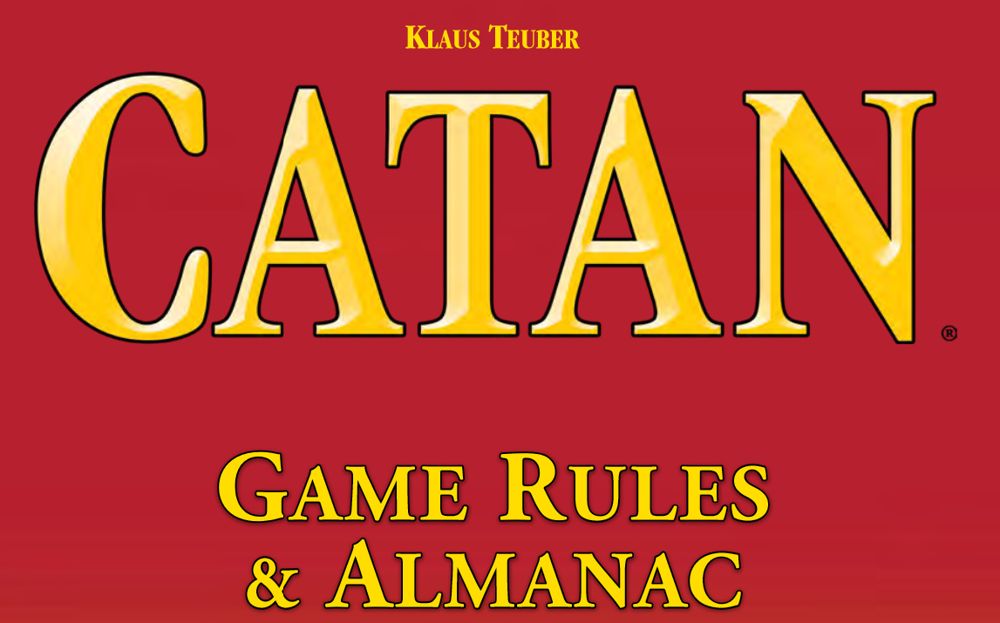

Rules
- Making the map
- First assemble the frame by connected the edge piceses together using the nubmers as guides
- For beginners, it is recommended to use the map provided in the rule book
- Setting up the game
- Choose a color, take 5 settelments, 4 cities, and 15 roads
- Place 2 settlments and 2 roads on the map
- Sort the resource cards into 5 decks, face up
- Suffle the development cards, place them face down
- Each player recives resources from tiles surrounding one of your starting settlements
- Players should keep their resource cards hiddent
- Turns
- When it is your turn to play, you can, in this specific order do:
- Roll for resource production
- Trade
- or build roads, settelment, or cities.
- You may use a development card at any time during your turn
- Turn order is clockwise
- Resource Production
- At the start of your turn, roll two dice
- Any player that has a settlement on an intersection with a tile that has the number rolled gets the resource associated with it
- If it is a city, then the player will get two resources per tile
- Trade
- Any player may trade with you
- Both parties must agree for the trade to take place
- All trades must involve the current player
- Build
- Building can increase victory points, expand roads, improve resource production, or gain development cards
- You cannot build more than the ammound of pieces you have
- Roads
- All roads must connect to another road, settlement, or city
- Only one road per path
- Roads require 1 brick and 1 lumber to be constructed
- Settelments
- Each settelment produces 1 resource
- Settlement must connect to at least one road
- There must not be any settelment on any adjacent intersection
- Settlements require brick, lumber, wool, & grain
- Each settlement is worth 1 victory point
- City
- You can only establish a city by upgrading one of your settlements
- When upgraded, the replaced settlement can be used on future turns
- Cities produce 2 resources
- Cities require 3 ore & 2 grain
- Cities are worth 2 victory points
- Development Cards
- There are three different kinds of Development Cards
- Knight, Progress, and Victory Cards
- Requires ore, wool, & grain
- Robber
- Robber becomes active if a seven is rolled
- When robber is activated, all players with more than seven resource cards must return half (rounded down) of them
- You must moved robber to any terrain besides the desert
- You may steal any resource from a player that has a settlement that the robber is adjacent to
- Robber will prevent the tile that it is on from producing until it is moved again
- Development Cards
- Knight
- Once knight card is played, see moving the robber
- Once three knights are played, player gets biggest army card and two victory points
- Biggest army card transfers to who ever activated the most knights
- Progress Card
- Follow the instructions on the card
- Victory card
- These cards grant victory points
- Ending the game
- The games ends once a player reaches 10 points
For more information, consult the rule book linked on the side